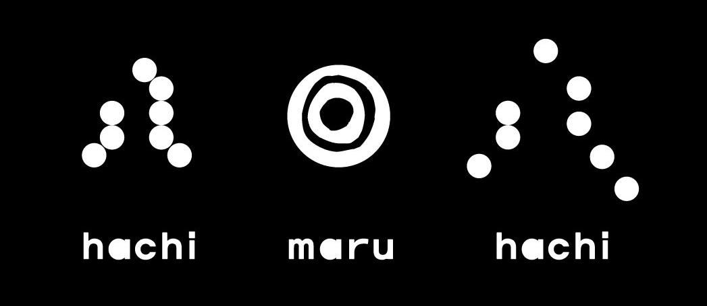

808 rue Jean-Talon Ouest · Montréal
514 · 270 · 6666À MANGER
FOOD
- · végétalienne · vegan
- · sans gluten · gluten free
SOUPE ET SUPPLÉMENT
SOUP & EXTRA
ACCOMPAGNEMENTS
SIDES
PLATS PRINCIPAUX
MAIN DISHES
À BOIRE
DRINKS
02
BIÈRES JAPONAISES AU KOJI
JAPANESE KOJI BEERS
Bières brassées avec du koji, un ferment traditionnel japonais qui enrichit les arômes. Beers brewed with koji, a traditional Japanese fermentation culture.
BOISSONS SANS ALCOOL
NON-ALCOHOLIC DRINKS
BOISSONS CHAUDES
HOT DRINKS